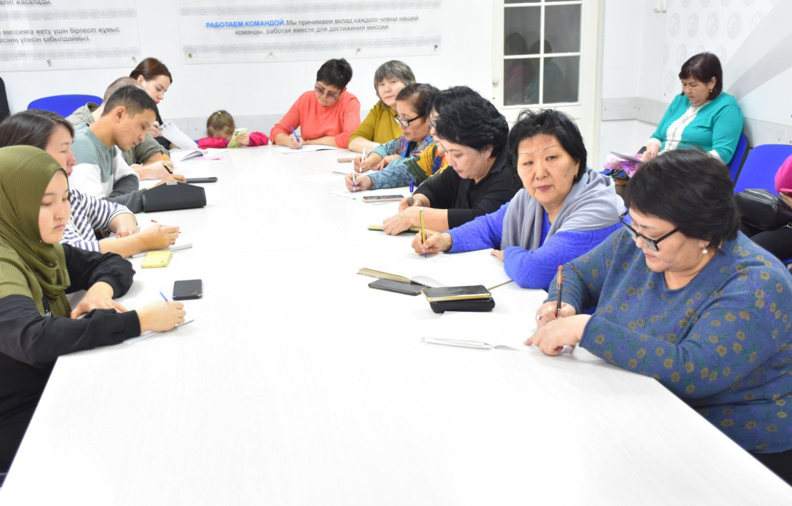
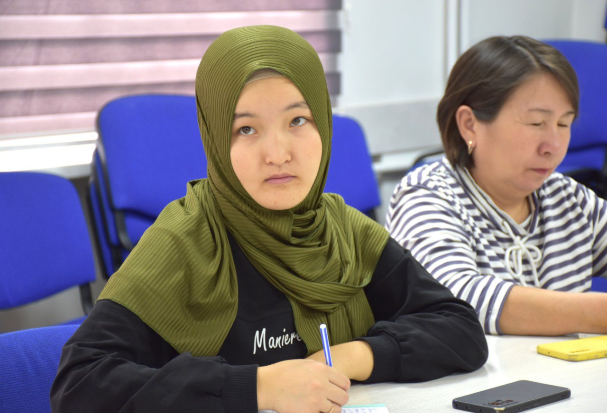
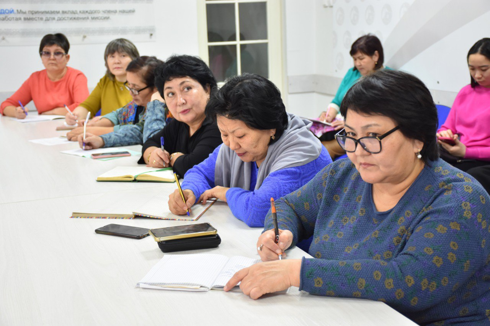

Новости
Правильно собранная мокрота — залог получения достоверных результатов
3 декабря 2024
Соблюдение правил сбора, его качество, хранение и транспортировка мокроты имеет критически важное значение как для надежности результатов лабораторного исследования на туберкулез, так и для инфекционной безопасности медицинских работников.
В центре фтизиопульмонологии областной координатор лабораторной службы мониторинга и оценки противотуберкулезных мероприятий Ляззат Бигалиева провела семинар для представителей среднего медперсонала ПМСП Уланского района, ЦМиР и Диагностического центра.
Участники получили информацию о молекулярно-генетическом методе GeneXpert, правилах 15 шагов сбора мокроты, требования к сбору мокроты согласно Приказу МЗ РК № 29 от 28.03.2022 г. "Санитарно-эпидемиологические требования к организации и проведению санитарно-противоэпидемических, санитарно-профилактических мероприятий по предупреждению инфекционных заболеваний (туберкулез)".
Важно отметить, что медицинские работники, занимающиеся сбором мокроты, должны проходить обучение и переподготовку по данной процедуре не реже одного раза в год.
Сбор мокроты представляет собой потенциально опасную процедуру, в процессе которой может образовываться инфекционный аэрозоль. Поэтому необходимо строго придерживаться правил биобезопасности и тщательно выполнять требования инфекционного контроля. Сбор мокроты должен проводиться только под наблюдением назначенного администрацией учреждения медицинского работника.
